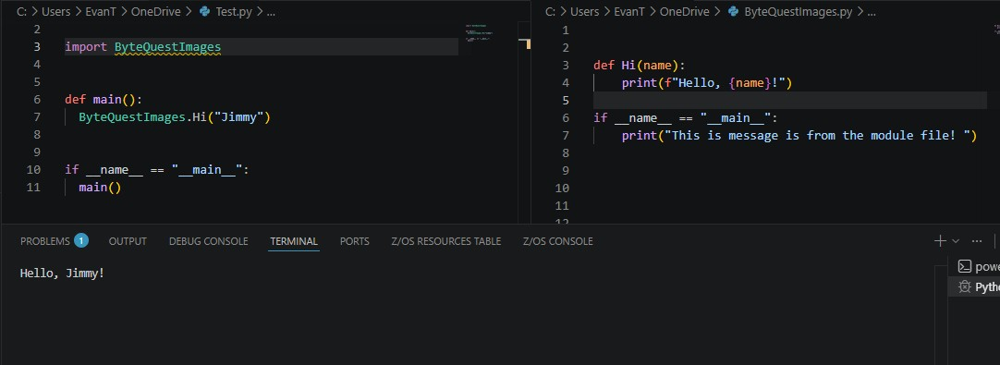
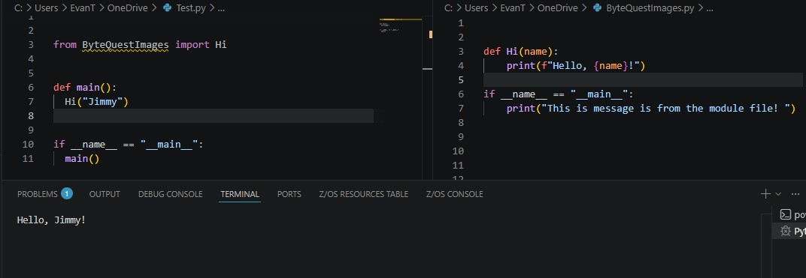

Can you Import your own files to a python program?
The answer is yes, you can import other python files into your program.
You can import other files by writing 'import FileName'.

BUT, you NEED the file to be in the same directory to access it like that.
If the file is in another directory, you will do something different.
It is more complex and we urge you to try to find it and try it out, but we will not go over it here.
If you want to import a specific function you do the same thing you would do with any other outside package, 'from' filename 'import' function.
